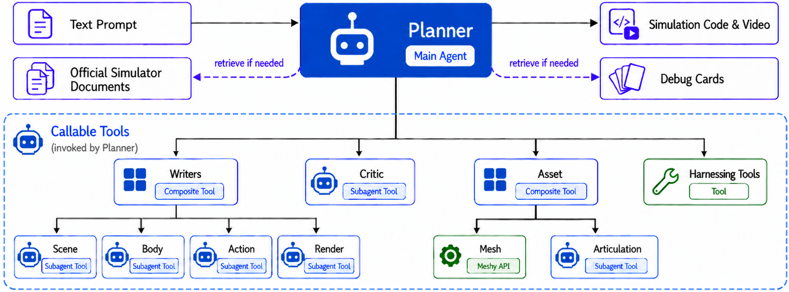
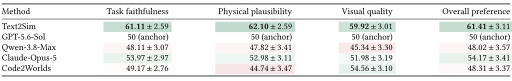
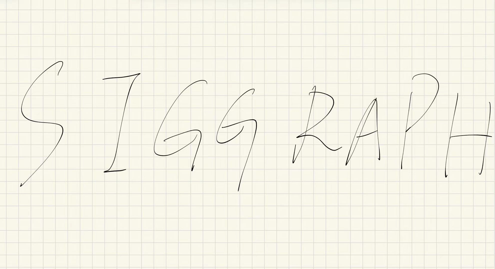

Rigid Body
Prompt Rotate a blue roller to wind an interlocked colorful ring chain and lift its rigid anchor. Continue rotating to fling the chain and anchor outward until extended.
1Tsinghua University2Carnegie Mellon University3Genesis AI4Shanghai Qi Zhi Institute
Creating diverse physical simulations remains labor-intensive because assets, layout, physical parameters, motion, control, and rendering must be designed and debugged jointly. We present Text2Sim, a simulation-specialized agentic pipeline that converts a text-only request into an executable, editable dynamic case. Built on Genesis, Text2Sim uses a hierarchical agentic structure that combines a Planner with specialized Writers, asset-generation tools, and an independent Critic. Compact skills (Debug Cards) distilled from graphics demonstrations provide role-specific physical guidance for execution-based repair. We evaluate physical quality, visual quality, and human preference on 42 held-out prompts spanning rigid, articulated, deformable, and cloth phenomena, with a paper-level split between experience construction and evaluation. We design automatic physical and visual scorers to evaluate the quality of the results, and Text2Sim achieves higher scores than all four state-of-the-art baselines on both metrics. In blinded user studies with these baselines, significantly more participants prefer Text2Sim than prefer the baselines, which is consistent with the results from our automatic scorers. The pipeline also supports a broad range of downstream applications; we select dataset construction and extension to multimodal input as two representative examples. We will release the code, the Debug Card library, and a dataset of generated cases, each pairing the text prompt and rendered video with the executable program, assets, physical parameters, controls, and recorded states.
Text2Sim brings planning, specialized code generation, and execution-based critique into one simulation authoring workflow.

A Planner coordinates four Writers for the scene, bodies, actions, and rendering. Asset agents supply geometry and articulated mechanisms.
Genesis executes the generated program. An independent Critic inspects code, numerical records, and rendered evidence to guide targeted repairs.
Debug Cards distill graphics demonstrations into reusable diagnostic and repair guidance, retrieved for each task and responsible agent.
60 generated examples spanning rigid bodies, articulated mechanisms, deformable objects, and cloth.
We evaluate physical quality, visual quality, and human preference on 42 held-out prompts, comparing Text2Sim with four baselines.
Prompt Rotate a blue roller to wind an interlocked colorful ring chain and lift its rigid anchor. Continue rotating to fling the chain and anchor outward until extended.
Prompt Pull an extremely soft blue dolphin through a rigid funnel and a long tube much narrower than its body, so it elongates and squeezes through.
Prompt Slowly pull a teal tablecloth from beneath plates, food, cutlery, a bottle, and a goblet on a black table. Let friction drag the objects as the cloth drapes.
GPT-5.6-Sol did not produce a completed simulation for this case.
Scores over all 42 evaluation cases. Bold values indicate the best mean in each metric.
Scene, Body, Action, and Render evaluate the generated program and its execution evidence.
| Configuration | Scene | Body | Action | Render | Overall |
|---|---|---|---|---|---|
| Text2Sim | 99.10 ± 2.42 | 99.15 ± 1.20 | 96.10 ± 2.36 | 87.22 ± 3.96 | 95.32 ± 1.37 |
| GPT-5.6-Sol | 99.09 ± 3.08 | 95.55 ± 4.15 | 82.69 ± 4.91 | 76.50 ± 5.20 | 86.59 ± 4.44 |
| Qwen-3.8-Max | 97.25 ± 3.42 | 93.38 ± 4.22 | 83.57 ± 3.96 | 70.89 ± 4.40 | 84.09 ± 2.05 |
| Claude-Opus-5 | 97.03 ± 4.38 | 96.84 ± 2.69 | 88.75 ± 3.16 | 77.63 ± 4.40 | 88.60 ± 2.07 |
| Code2Worlds | 67.20 ± 7.04 | 81.50 ± 6.93 | 71.68 ± 6.09 | 73.56 ± 6.00 | 67.91 ± 4.27 |
Content fulfillment, demonstration clarity, visual polish, and demo appeal are evaluated from the rendered videos.
| Configuration | Content | Clarity | Polish | Appeal | Overall |
|---|---|---|---|---|---|
| Text2Sim | 71.58 ± 4.82 | 74.94 ± 3.95 | 66.27 ± 2.73 | 64.70 ± 4.75 | 70.23 ± 2.87 |
| GPT-5.6-Sol | 63.00 ± 4.28 | 64.98 ± 3.23 | 55.08 ± 3.95 | 51.48 ± 4.30 | 59.89 ± 2.58 |
| Qwen-3.8-Max | 60.10 ± 3.86 | 60.56 ± 3.63 | 52.86 ± 4.13 | 45.96 ± 3.47 | 56.31 ± 2.51 |
| Claude-Opus-5 | 62.44 ± 4.11 | 64.38 ± 3.53 | 54.89 ± 4.02 | 51.21 ± 3.86 | 59.45 ± 2.61 |
| Code2Worlds | 59.70 ± 5.11 | 60.52 ± 3.63 | 57.84 ± 3.85 | 58.27 ± 3.63 | 59.26 ± 2.91 |
Blinded comparisons with 60 participants. GPT-5.6-Sol is the reference at 50; green and pink cells indicate higher and lower preference scores.

| Method | Task faithfulness | Physical plausibility | Visual quality | Overall preference |
|---|---|---|---|---|
| Text2Sim | 61.11 ± 2.59 | 62.10 ± 2.59 | 59.92 ± 3.01 | 61.41 ± 3.11 |
| GPT-5.6-Sol | 50 (anchor) | 50 (anchor) | 50 (anchor) | 50 (anchor) |
| Qwen-3.8-Max | 48.11 ± 3.07 | 47.82 ± 3.41 | 45.34 ± 3.30 | 48.02 ± 3.57 |
| Claude-Opus-5 | 53.97 ± 2.97 | 52.98 ± 3.11 | 51.98 ± 3.19 | 54.17 ± 3.41 |
| Code2Worlds | 49.17 ± 2.76 | 44.74 ± 3.47 | 54.56 ± 3.10 | 48.31 ± 3.37 |
Bring a visual reference or an existing asset into the same simulation authoring workflow.
Prompt Create a simulation of colorful soft letters (5 rows) falling, scattering, and settling into a loose pile.

Prompt Use the supplied asset for two curtains on sliding hooks. Gather them at the window sides, then close them again, preserving the printed graphics as the cloth folds.
@misc{xiong2026text2simagenticphysicsbasedsimulation,
title={Text2Sim: Agentic Physics-Based Simulation Generation with Distilled Expertise},
author={Xiaoyu Xiong and Tsun-Hsuan Wang and Yi-Ling Qiao and Tao Du and Minchen Li},
year={2026},
eprint={2609.36593},
archivePrefix={arXiv},
primaryClass={cs.GR},
url={https://arxiv.org/abs/2609.36593},
}